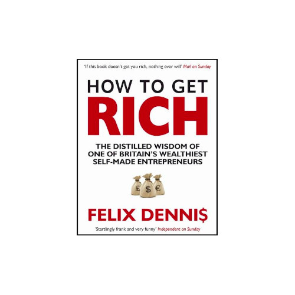

KSIĄZKI

BOGATY OJCIEC BIEDNY OJCIEC-ROBERT KIYOSAKI
Książka, która wstrząsnęła finansowym światem i wielu osobom otworzyła oczy. Nie musisz pracować na etacie w wielkiej korporacji, aby dorobić się majątku. Jest to jedynie powtarzany mit, który powoduje zarabianie skromnej pensji, wystarczającej jedynie na przeżycie. Prawdziwe finanse i bogactwo zaczynają się, kiedy zmienisz swoje nastawienie i zrozumiesz, że najważniejszym celem jest zarabianie na siebie samego. Nie dla szefa lub państwa, ale wykorzystując własne umiejętności należy stać się niezależnym, za czym pójdzie również niezależność finansowa.

UMYSŁ MILIONERA DAWID PIĄTKOWSKI
Zbuduj świadomie wymarzoną wolność i niezależność finansową. Odkrywając tajniki zdobywania ogromnego kapitału na start, błyskawicznie wcielisz najambitniejsze wizje w rzeczywistość. Dokonaj tego dla rodziny, w imię pasji lub realizacji marzeń.
Bez ryzyka, nie ma zwycięstwa.
To niebezpieczna książka, która da Ci dostęp do setek tysięcy, a nawet milionów złotych na start. Zero lania wody, sama praktyczna wiedza.
Sekrety multimilionerów:
Jak przygotować się do sukcesu finansowego?
Jak pozyskać miliony złotych na start i rozwój firmy?
Jak zamienić pasję w dochodowy biznes?
Jak budować wolność i niezależność finansową?
Poznaj kontrowersyjne tajemnice sukcesu finansowego autora. Zaczynając od zera pozyskał setki tysięcy, którymi w cztery lata zbudował majątek wart kilkanaście milionów złotych.

JAK ZDOBYĆ BOGACTWO -FELIX DENIS
DLACZEGO BOGATY CZŁOWIEK MIAŁBY TRACIĆ CZAS NA PISANIE KSIĄŻKI, KTÓRA POMOŻE SIĘ WZBOGACIĆ INNYM?
Z dwóch powodów. Po pierwsze, lubię pisać o czymś, na czym w mojej ocenie się znam. Po drugie, uważam, że każda osoba wykazująca się względnie przyzwoitą inteligencją może zdobyć bogactwo, o ile będzie zmotywowana i odpowiednio się do tego przyłoży.
Z pewnością pomaga też to, że w trakcie pisania sączę naprawdę zacne wino (Chateau d’Yquem, rocznik 1986, jeśli już musisz wiedzieć) i delektuję się świeżo uwędzonymi przysmakami z małż, siedząc wygodnie przy oknie z jednym najpiękniejszych widoków na świecie.
Jestem na Mustique – maleńkiej wyspie wchodzącej w skład karaibskich Wysp Nawietrznych. Konkretniej, siedzę właśnie w mojej „chacie pisarza”, nowym studiu-bibliotece oddalonym nieco od głównej rezydencji, wybudowanym wyłącznie w jednym celu – bym mógł pisać co tylko sobie zażyczę w ciszy i spokoju. Swoją drogą, zwykle jest to poezja.
Nie muszę ci chyba przypominać, że wszystko to kosztuje. To właśnie dostajesz, będąc bogatym – o ile tego chcesz.
{kind=link}